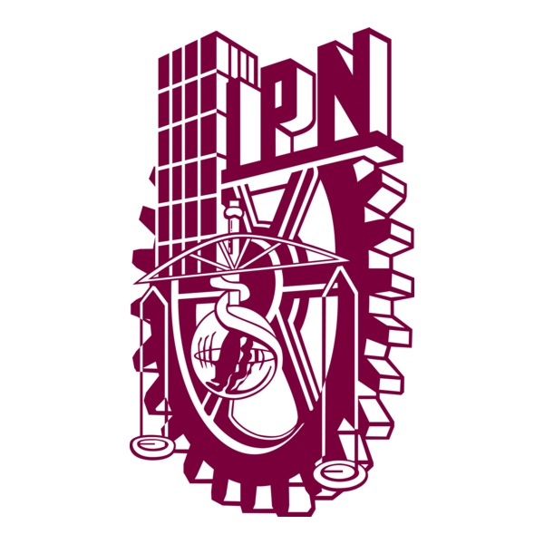
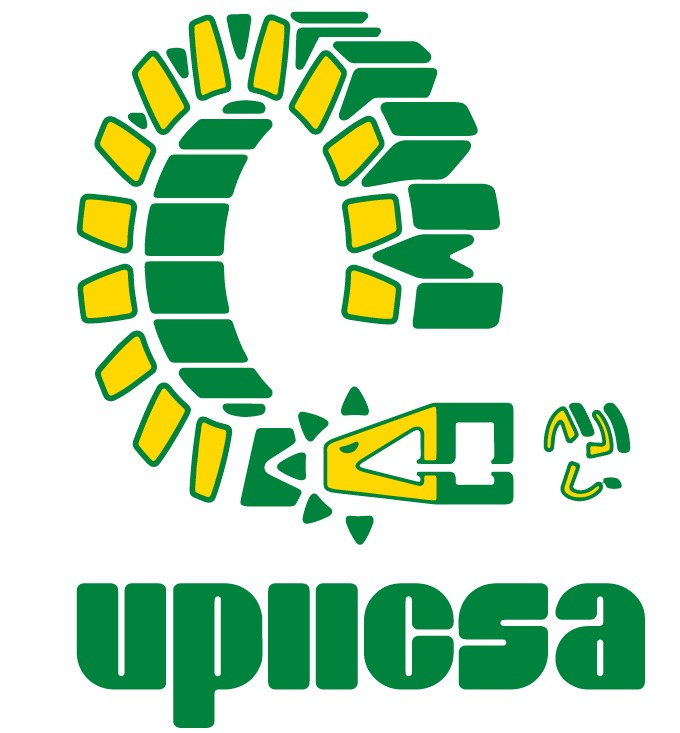

Duran Luna Estefaia - Mis tareas
Departamental 3
 
Tarea 1
Descripción breve de la tarea
Tarea 2
Descripción breve de la tarea
Tarea 3
Descripción breve de la tarea
Tarea 4
Descripción breve de la tarea
Tarea 5
Descripción breve de la tarea